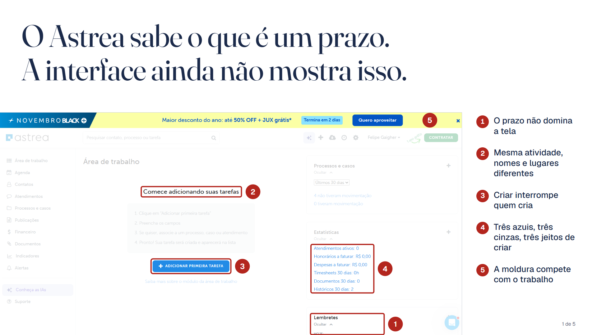

- O que a banca pediu
- Cinco problemas, princípios e o que verificar. Até 5 páginas.
- O que foi entregue
- 5 slides e o diagnóstico.
Cinco problemas de experiência na gestão de atividades, cada um com evidência das telas do produto e o motivo de importar.
- O prazo não domina as telas que existem para ele.
- Sem hierarquia de nomes, a mesma atividade em quatro lugares.
- Criar uma atividade interrompe quem cria.
- Três azuis, três cinzas, três jeitos de criar.
- A moldura compete com o trabalho.
Os slides fecham com os princípios de design e com o que verificar antes de seguir.
